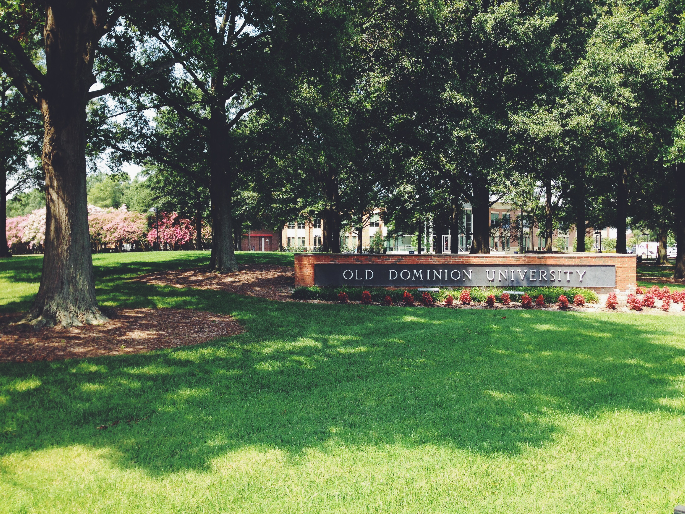

Timothy Holmes is a software developer from Norfolk, Virginia. He is studying Computer Science at Old Dominion University, and will be graduating in December 2015. His areas of interest include web and mobile development. Currently he is working on web applications for StarChase LLC. His research includes developing a GUI for "black box" genome sequencers. More information can be found here.
Outside of software development, Tim enjoys playing music. Streaming music can be found here: